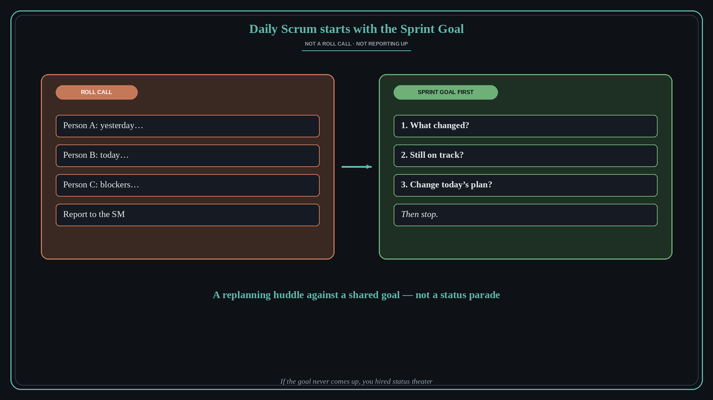

Start Daily Scrum with the Sprint Goal, not the people
Source: Fearless Agility / Jimi Fosdick (@FearlessAgility)
original post
What it claims
Make Daily Scrum better by starting with the Sprint Goal, not the people. Ask three questions: What changed? Are we still on track? What do we change in today’s plan? Then stop. No roll call. No reporting to the Scrum Master. The event is a replanning huddle against a shared goal, not a status parade around the room.
Why it matters for a PO
Many teams still run Daily Scrum as “yesterday / today / blockers” per person. That turns the PO’s Sprint Goal into wallpaper and trains the team to report upward instead of inspect progress toward the outcome they committed to. Starting from the goal keeps the fifteen minutes about whether the Sprint is still winning — and what to change today if it is not.
3 takeaways
- Open on the Sprint Goal: What changed? Still on track? What changes in today’s plan?
- No roll call and no reporting to the Scrum Master — the team inspects the plan together.
- If the goal never comes up, you hired Daily Scrum as status theater, not empiricism.
Practice this week
In the next Daily Scrum, put the Sprint Goal on the screen first. Facilitation order: (1) what changed since yesterday that affects the goal, (2) are we still on track, (3) what we change in today’s plan. Cut any person-by-person update that does not answer those three.